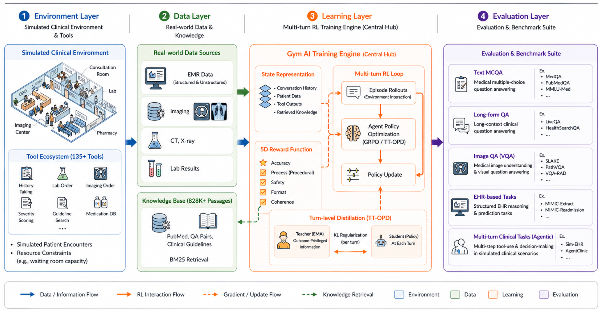
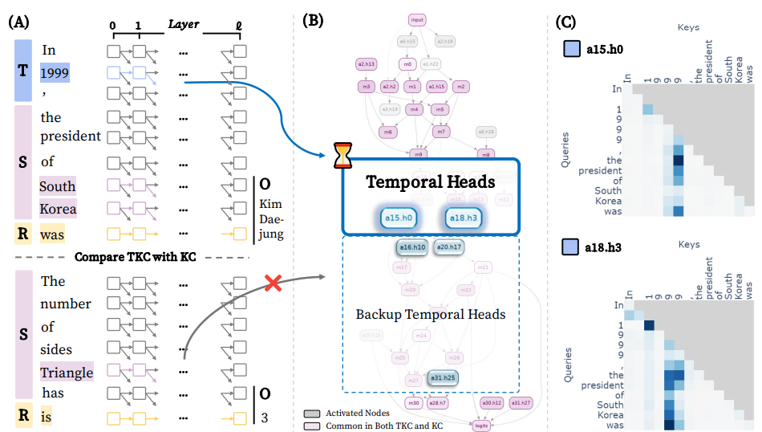
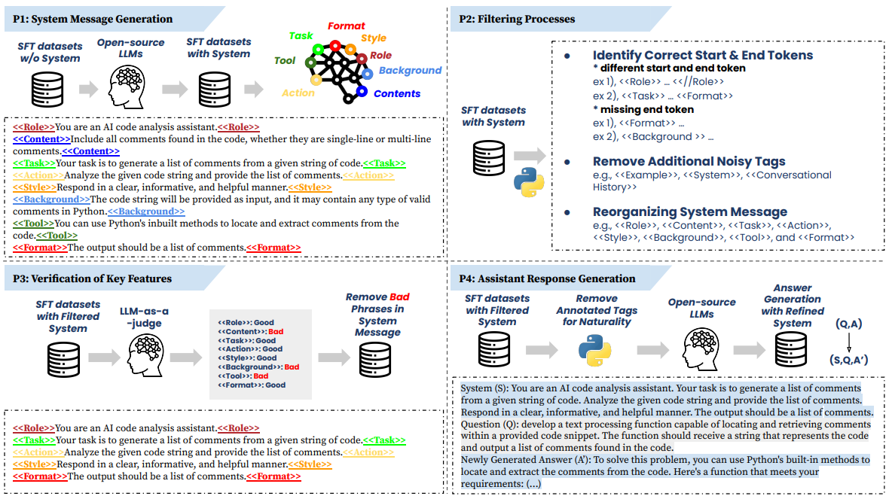
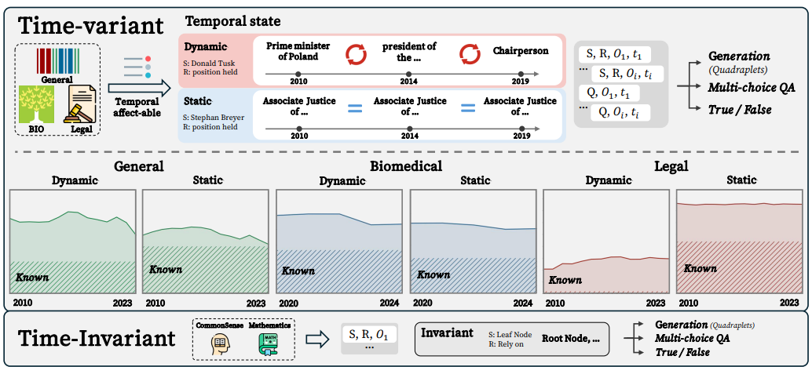
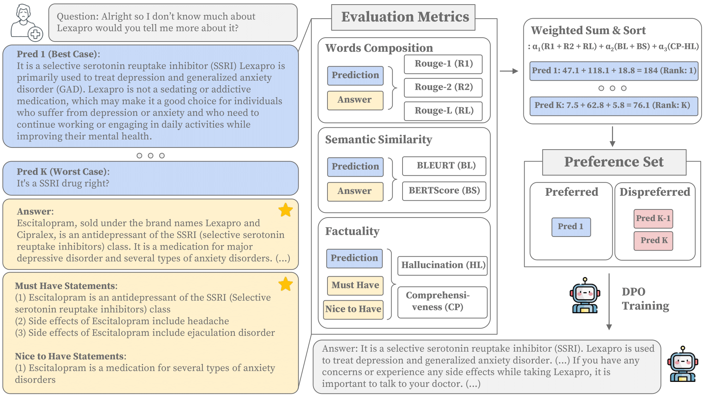
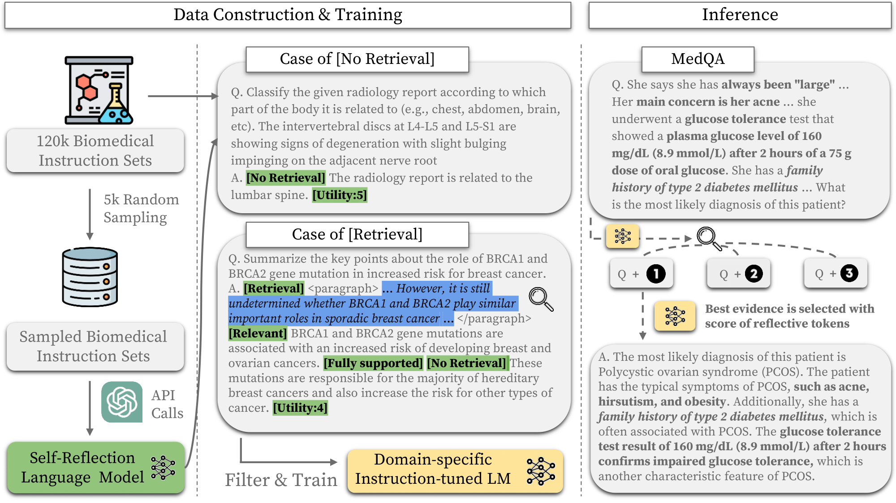
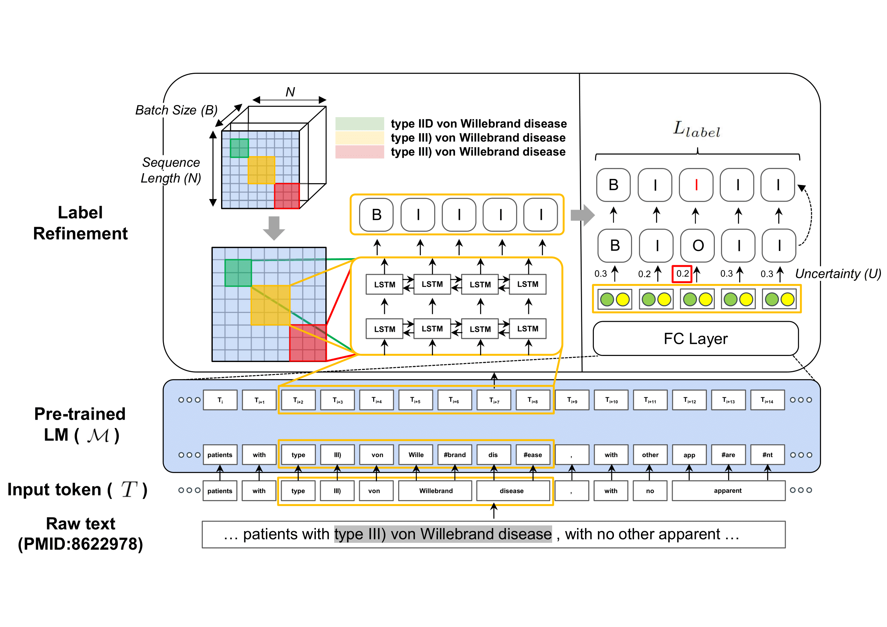
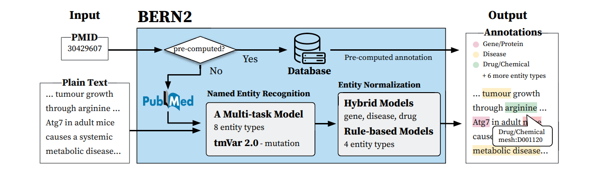
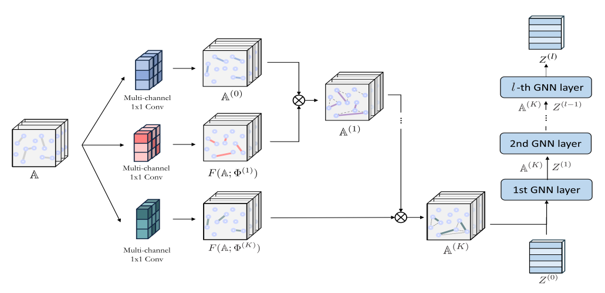
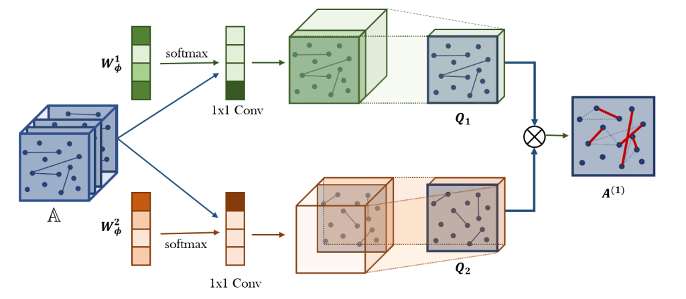

Publications

Minbyul Jeong,
Preprint.
arXiv / code / project page / dataset
We present OpenBioRQ, an agentic benchmark of 12,553 genuinely unsolved biomedical research questions across 12 domains. Without fixed answer keys, it scores agents on retrieval-grounded tool use and citation faithfulness, exposing wrong-paper citations (15.9%) and "agentic collapse" that closed-form medical QA cannot reveal.

Minbyul Jeong,
Preprint.
project page / code / dataset
Web-agent benchmarks mostly measure depth — pinning one obscure answer behind a chain of constraints. Ko-WideSearch measures breadth: enumerate every member of a closed set and fill each item's attributes. Agents recover set membership well (92.8% Item-F1) but fail to complete rows (53.7% Row-F1).

Minbyul Jeong,
Preprint.
arXiv / code / project page
We present a gymnasium-compatible environment with 10 clinical domains and 3.6K+ tasks for training medical agents via multi-turn reinforcement learning. We introduce Turn-level Truncated On-Policy Distillation (TT-OPD) to stabilize training and improve multi-turn clinical reasoning.

Yein Park, Chanwoong Yoon, Jungwoo Park, Minbyul Jeong, Jaewoo Kang,
Preprint.
arXiv / code
We discover Temporal Heads, specific attention heads primarily responsible for processing temporal knowledge through circuit analysis.

Minbyul Jeong, Jungho Cho, Minsoo Khang, Dawoon Jung, Teakgyu Hong,
Preprint.
arXiv
We present SysGen, a pipeline for generating system messages with better aligned assistant responses from the supervised fine-tuning dataset without system messages.

Yein Park, Chanwoong Yoon, Jungwoo Park, Donghyeon Lee, Minbyul Jeong, Jaewoo Kang,
ICLR 2025.
open review / code
We present CHROKNOWLEDGE (Chronological Categorization of Knowledge), a novel sampling-based framework for evaluating LLMs’ non-parametric chronological knowledge.

Minbyul Jeong, Hyeon Hwang, Chanwoong Yoon, Taewhoo Lee, Jaewoo Kang,
Preprint.
arXiv / code / Youtube
We present MedLFQA, a benchmark dataset reconstructed using long-form question-answering. We also introduce OLAPH, a framework leverages automatic evaluation to generate synthetic preference sets that can help align the model with preferred responses.

Minbyul Jeong, Jiwoong Sohn, Mujeen Sung, Jaewoo Kang,
ISMB 2024.
arXiv / code
We present Self-BioRAG, a domain-specific LLM version of Self-RAG framework.

Minbyul Jeong, Jaewoo Kang,
Bioinformatics 2023.
paper / code
We present ConNER, a biomedical NER training framework to enhance label consistency in document-level context.

Mujeen Sung*, Minbyul Jeong*, Yonghwa Choi, Donghyeon Kim, Jinhyuk Lee, Jaewoo Kang,
Bioinformatics Appnote 2022.
demo / paper / code
We present BERN2, a biomedical NER and NEN framework to automatically extract biomedical entities in biomedical literature. It only spent 0.3sec per document.

Seongjun Yun, Minbyul Jeong, Sungdong Yoo, Seunghun Lee, Sean S. Yi, Raehyun Kim, Jaewoo Kang, Hyunwoo J. Kim,
Neural Networks 2022.
paper / code
We present FastGTN, a network improve scalability of graph transformations from previous version of Graph Transformer Networks (GTN).

Seongjun Yun, Minbyul Jeong, Raehyun Kim, Jaewoo Kang, Hyunwoo J. Kim,
NeurIPS 2019.
paper / code
We present GTN, a network for graph transformations to enhance node representations.